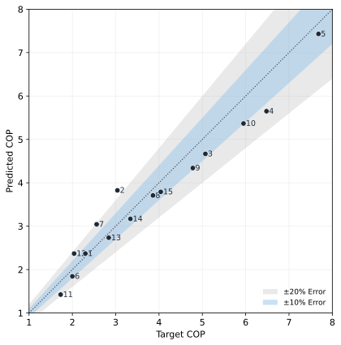

Validation¶
AirSourceHeatPumpBoiler
has been validated against the Samsung EHS Mono HT Quiet R32 14 kW
catalogue across 15 operating points spanning
\(T_{\mathrm{LWT}} \in \{40, 50, 65\}\) °C and outdoor air
temperatures from −10 to 30 °C, tracking the catalogue COP to a mean
absolute error of 0.35 (MAPE 10.1 %) without any unit-specific
calibration — the same code path applies to any CoolProp refrigerant.
Parity plot¶
{kind=link}

Predicted COP vs catalogue target COP. The 1 : 1 diagonal is the reference; points clustered around it indicate the model tracks the catalogue without unit-specific calibration.¶
Per-point comparison¶
Catalogue conditions and target values follow Table 1 of the
KJACR 2026 paper (see citations below). Predicted values come
from re-running the released code via
scripts/validation/samsung_ehs_parity.py.
Notation¶
\(T_{\mathrm{LWT}}\) — Leaving Water Temperature, the manufacturer’s catalogue reference. The model’s tank temperature is set 2.5 K below \(T_{\mathrm{LWT}}\) for \(T_{\mathrm{LWT}} \le 60\) °C and 5 K below for \(T_{\mathrm{LWT}} > 60\) °C, per the paper’s EWT / LWT offset.
\(T_0\) — outdoor (dead-state) air temperature.
\(\dot{Q}_{\mathrm{cond}}\) — target condenser heat rate.
\(\mathrm{COP}\) — system Coefficient of Performance, \(\dot{Q}_{\mathrm{cond}} / (E_{\mathrm{cmp}} + E_{\mathrm{fan}})\).
AE — Absolute Error, \(\left|\mathrm{COP}_{\mathrm{pred}} - \mathrm{COP}_{\mathrm{target}}\right|\).
APE — Absolute Percentage Error, \(\mathrm{AE} / \mathrm{COP}_{\mathrm{target}}\).
MAE / MAPE — mean of AE / APE over all 15 points.
Reproducibility¶
The parity plot and the table above are regenerated by scripts/validation/samsung_ehs_parity.py, so anyone can rerun the comparison from the source.
uv sync --locked
uv run python scripts/validation/samsung_ehs_parity.py
The script:
Iterates over the 15 catalogue operating points hard-coded from Samsung’s TDB Table 1.
Calls
AirSourceHeatPumpBoiler(ref="R32").analyze_steady(...)at each point.Writes a publication-quality SVG to
docs/source/_static/validation_parity.svgwith a pinnedsvg.hashsaltso the output is byte-identical across runs.
Scope¶
What has — and hasn’t — been benchmarked
Only AirSourceHeatPumpBoiler has been quantitatively
validated against catalogue data. The other system classes
(GroundSourceHeatPumpBoiler,
WaterSourceHeatPumpBoiler,
AirSourceHeatPump,
GroundSourceHeatPump,
and the subsystem-augmented variants) share the same
refrigerant-cycle core and pass smoke tests on representative
operating points, but they have not yet been benchmarked
against unit-specific data.
The accuracy reported here is achieved without unit-specific calibration — the same code path applies to any CoolProp refrigerant and any operating envelope the cycle can physically close in.
Citations¶
Jo, H. & Choi, W. “Thermodynamic Modeling of Refrigerant Cycle in an Air-Source Heat Pump Boiler and Performance Validation”, KJACR (2026, in press).
Samsung Electronics, EHS Mono HT Quiet R32 Technical Data Book (2024) — PDF.